사무자동화산업기사 (2019-03-03 기출문제)
1과목: 사무자동화 시스템
1. 다음 사무자동화 관련 주변 장치에서 자료기억 또는 저장장치가 아닌 것은?
- 자기디스크 장치
- 자기테이프 장치
- 자기문자판독 장치
- 자기드럼 장치
(정답률: 84%)

2. 집중처리시스템의 특징으로 가장 옳은 것은?
- 확장성이 우수하다.
- 전사적 관리가 용이하다.
- 시스템 전체의 융통성이 높다.
- 조직 요구에 대한 대응이 용이하다.
(정답률: 68%)
3. 다음 중 자료저장 기기로서 종이에 인쇄된 정보를 축소 촬영한 필름에 저장하는 기기는?
- CAR(Computer Assisted Retrieval)
- COM(Computer Output Microfilm)
- 광디스크
- CD-ROM
(정답률: 82%)
4. 다음 중 CALS의 개념에 포함되지 않는 것은?
- EDI(Electronic Data Interchange)
- BPR(Business Process Reengineering)
- ECR(Efficient Consumer Response)
- MPC(Multimedia Personal Computer)
(정답률: 63%)
5. 백화점이나 전시장 또는 공항이나 철도역 같은 곳에 설치되어 각종 행사절차나 상품정보, 시설물의 이용방법, 인근지역에 대한 관광 정보 등을 제공하는 무인정보 단말기는?
- CTI
- RF 단말기
- KIOSK
- ATM
(정답률: 91%)
6. 데이터의 생성 양, 주기, 형식 등이 기존 데이터에 비해 매우 크기 때문에, 종래의 방법으로는 수집 - 저장 - 검색 - 분석이 어려운 방대한 데이터를 의미하는 개념은?
- 빅데이터
- 데이터마트
- 데이터웨어하우스
- 네트워크 데이터베이스
(정답률: 88%)
7. 관계 대수 연산자와 기호가 잘못 짝지어진 것은?
- 셀렉션: σ
- 프로젝션: π
- 개명:ρ
- 조인: ×
(정답률: 76%)
8. 문자와 그림 정보를 미리 도트 형태로 단말장치에 전송하는 비디오텍스 방식은?
- 간접 도트 전송 방식
- 알파 모자이크 방식
- 알파 지오메트릭 방식
- 알파 포토그래픽 방식
(정답률: 54%)
9. 모니터나 프린터의 해상도를 나타내는 DPI 개념은?
- Dot Per Indicator
- Dot Per centImeter
- Dot Per Inch
- Dot Per Impression
(정답률: 85%)
10. 응용소프트웨어의 종류로만 짝지어진 것은?
- MS-Excel, 프리미어 프로, 포토샵
- MS-Word, MS-Access, 컴파일러
- MS-Word, SQL, 인터프리터
- AutoCADm Java, 어셈블러
(정답률: 83%)
11. 사용자 PC를 인질로 삼아 시스템을 잠그거나 데이터를 암호화해 사용할 수 없도록 한 뒤 금전을 요구하는 악성 프로그램으로 가장 옳은 것은?
- 스파이웨어
- 랜섬웨어
- 비트락커
- 카스퍼스키
(정답률: 86%)
12. 문자, 도표, 사진 등의 정지화상을 화소로 분배하여 전기적 신호로 변환한 후 전기통신회선이나 전파로 전송하여 원래대로 복원, 기록하는 전송기기는?
- 팩시밀리
- 스캐너
- 프린터
- 복사기
(정답률: 82%)
13. CPU와 입출력장치와의 속도차를 줄이기 위해 사용하는 기법은?
- breaking
- buffering
- streaming
- anti-aliasing
(정답률: 89%)
14. 공개키 알고리즘을 통한 암호화 및 전자서명을 제공하기 위한 보안 시스템 환경을 의미하는 것은?
- PGP
- PKI
- PSP
- PKG
(정답률: 67%)
15. 데이터베이스의 장점으로 옳지 않은 것은?
- 데이터 중복 최소화
- 단말기를 통해 요구된 내용을 일괄 처리
- 데이터의 물리적, 논리적 독립성 유지
- 데이터 보안을 유지하여 데이터의 손실방지
(정답률: 64%)
16. 다음 사무자동화 수행 방식 중 하향식 접근방식에 관한 것은?
- 단기간에 구축할 수 있으며 최고 경영자가 요구하는 최적의 시스템을 구축한다.
- 기존 조직의 거부감이 상대적으로 적어 자연스럽게 도입된 기기의 활용이 가능하다.
- 사무자동화 도입을 조직의 하무 단위업무로부터 점차 상층부로 확대 실시한다.
- 사무 개선으로 시작하는 예가 많으며 단계적으로 고도의 자동화 수준으로 확대해간다.
(정답률: 83%)
17. 위협으로부터 보호하기 위한 물리적인 수단에 의해 이루어지는 보안은?
- 네트워크 보안
- 물리적 보안
- 시스템 보안
- 화학적 보안
(정답률: 85%)
18. 그룹웨어의 기능과 가장 거리가 먼 것은?
- 의사결정기능
- 이미지편집기능
- 정보공유기능
- 업무흐름 관리기능
(정답률: 85%)
19. 사무자동화 기능 중 모든 기능을 합리적으로 결합시켜 업무처리를 신속, 정확하게 하는 것은?
- 문서화 기능
- 통신 기능
- 자동화 기능
- 정보활용 기능
(정답률: 75%)
20. 특정 기업 간의 CALS 및 EDI를 통한 수주, 구무, 조달 및 납품 등과 관련된 기업 간의 전자상거래를 의미하는 용어로 가장 적합한 것은?
- B2C
- B2B
- C2C
- C2G
(정답률: 86%)
2과목: 사무경영관리 개론
21. 정보보안의 3대 원칙이 아닌 것은?
- 기밀성
- 가용성
- 무결성
- 효율성
(정답률: 84%)
22. 경영정보시스템의 특징으로 가장 거리가 먼 것은?
- 기업의 전략, 계획, 조정, 관리, 운영 등의 결정을 보조하는 특징을 가짐
- 전문성은 기업의 업무를 분석하고 기업 경영을 진단하는 능력
- 분석과 진단에 의해 기업 업무의 정보 요구가 정의되고, 효율성은 저해될 수 있는 특징
- 의사결정지원을 보다 적절하게 할 수 있는 특징
(정답률: 75%)
23. 사무작업의 효율성을 높이기 위한 동작연구의 목적이 아닌 것은?
- 필요한 동작은 쉽고 간편하게 개선한다.
- 불필요한 작업을 제거한다.
- 스톱워치를 사용하여 동작에 필요한 표준시간을 산출한다.
- 적절한 절차배정이 끝난 작업에 대한 방법을 표준화 한다.
(정답률: 63%)
24. EDI 소프트웨어의 종류가 아닌 것은?
- 연계 소프트웨어
- 형식 변환 소프트웨어
- 통신 소프트웨어
- 데이터 압축 소프트웨어
(정답률: 56%)
25. 다음은 정보보안의 무엇에 대한 용어인가?
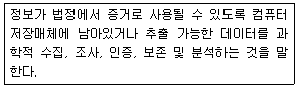
- 컴퓨터 포렌식스
- 트랩도어
- 프로토콜
- 웜바이러스
(정답률: 80%)
26. 사무와 관련된 설명으로 가장 적합하지 않은 것은?
- 사무관리는 관리비용의 절감, 관리의 용이성을 증대시켜 경영의 생산성을 이루려 한다.
- 사무작업에는 기록, 계산, 통신, 회의, 분류, 정리 등의 작업이 포함된다.
- 집에서 가계부를 작성하는 것도 일종의 사무라 할 수 있다.
- 사무실은 사무원이 사무작업을 능률적으로 관리하도록 설치된 곳이다.
(정답률: 84%)
27. 사무표준의 구비조건으로 틀린 것은?
- 사무표준은 정확해야 한다.
- 사무작업내용과 근무조건을 분석하기 전에 만들어야 한다.
- 주기적으로 재검토하여 수정하여야 한다.
- 실제적용에 무리가 없고 당사자인 사무원들이 받아들일 수 있어야 한다.
(정답률: 75%)
28. 사무통제의 수단과 가장 거리가 먼 것은?
- Tickler System
- Taylor System
- Come Up System
- PERT
(정답률: 58%)
29. 행정 효율과 협업 촉진에 관한 규정에 의거 행정기관에서 공무상 작성하거나 시행하는 문서와 행정기관이 접수한 모든 문서를 지칭하는 것은?
- 공문서
- 전자문서
- 사문서
- 이미지문서
(정답률: 87%)
30. 정보관리에 관한 설명으로 가장 옳지 않은 것은?
- 정보관리의 목적은 정보를 신속, 정확, 편리하게 제공함에 있다.
- 정보관리의 활동범위는 사무관리보다 광범위하다고 볼 수 있다.
- 정보관리의 범위는 정보통제기능에 한한다.
- 정보관리단계는 정보수요파악, 수집계획수립, 정보가공, 정보평가 및 활용 순이다.
(정답률: 67%)
31. 사무분석의 기법 중 사무공정 분석에 관한 내용이 아닌 것은?
- 결재권한의 합리화
- 사무작업시간의 적정화
- 사무서식의 분석 및 개선
- 사무흐름의 표준화
(정답률: 30%)
32. 다음 중 사무실 배치 원칙과 가장 거리가 먼 것은?
- 대실주의(큰방주의)는 사무실 배치에 있어서 가능한 독방을 늘린다.
- 사무의 성격이 유사한 부서는 가깝게 배치한다.
- 내부 및 외부 민원 업무 등 대중과 관계가 많은 부서는 가급적 입구근처에 배치한다.
- 장래확장에 대비하여 탄력성 있는 공간을 확보한다.
(정답률: 85%)
33. 사무계획 수립 절차에 속하지 않는 것은?
- 시정조치
- 정보의 수집
- 최종안의 선택
- 사무의 목적 및 목표의 명확화
(정답률: 68%)
34. 사무 간소화의 대상이 되는 작업과 가장 거리가 먼 것은?
- 사무처리 소요시간이 타 작업과 비교하여 상대적으로 긴 작업
- 사무처리 비용이 타 작업과 비교하여 상대적으로 많이 소요되는 작업
- 정보의 상호전달, 자료의 배분 등이 잘 안되는 1회성 작업
- 업무의 반복, 불평등한 업무량 등으로 불평불만이 제기되는 작업
(정답률: 78%)
35. 정보통신망의 내부 또는 정보통신망간의 상호접속에 제공되는 정보통신기기 간 통신신호의 순서 및 절차 등에 관한 약속을 무엇이라고 하는가?
- 프로그램
- 프로토콜
- 프로토타입
- 프로메타
(정답률: 86%)
36. EDIFACT의 구성요소에서 3가지 기본요소가 아닌 것은?
- 문법과 구문규칙
- 데이터 엘리먼트 디렉토리
- 표준 메시지
- 코드집
(정답률: 70%)
37. 정보통신망에서 개인정보의 안전성 확보에 필요한 기술적 조치에 해당하는 것은?
- 개인정보의 안전한 취급을 위한 내부관리계획의 수립 및 시행
- 개인정보의 안전한 보관을 위한 잠금장치
- 침해사고방지를 위한 보안 프로그램의 설치 및 운영
- 개인정보보호를 위한 정기적인 자체 감사 실시
(정답률: 73%)
38. 다음 중 전산망의 효과가 아닌 것은?
- 경제적 효과
- 신뢰성 향상
- 처리능력 향상
- 프로토콜의 다양화
(정답률: 81%)
39. 정부에서 국가기관 등의 국가정보화 추진과 관련된 정책의 개발과 건강한 정보문화 조성 및 정보격차 해소 등을 지원하기 위하여 설립한 기구는?
- 한국정보보호센터
- 한국정보화진흥원
- 국가전산망진흥협회
- 한국소프트웨어산업협회
(정답률: 85%)
40. 자료관리에 대한 설명으로 가장 옳지 않은 것은?
- 자료의 자연 증가를 통제할 수 있다.
- 자료처리에 따르는 경비를 절감할 수 있다.
- 자료를 서식화할 수 있다.
- 자료를 필요로 하는 곳에 신속하게 전달할 수 있다.
(정답률: 51%)
3과목: 프로그래밍 일반
41. 수식 “A+(B*C)"를 Postfix 표기법으로 옳게 나타낸 것은?
- A B C + *
- + A * B C
- A + B * C
- A B C * +
(정답률: 66%)
42. C 언어에서 사용하는 자료형이 아닌 것은?
- long
- integer
- float
- double
(정답률: 72%)
43. 로더의 기능이 아닌 것은?
- allocation
- compile
- linking
- relocation
(정답률: 68%)
44. C 언어에서 문자열 입력 함수는?
- puts( )
- gostring( )
- gets( )
- putchar( )
(정답률: 67%)
45. 프로그램 실행 이전에 정의한 속성이 결정되는 것은?
- 컴파일 바인딩
- 정적 바인딩
- 동적 바인딩
- 확정 바인딩
(정답률: 60%)
46. 운영체제의 커널(Kernel)의 기능으로 옳지 않은 것은?
- 명령어 해석
- 프로세스간의 통신
- 파일관리
- 입출력 관리
(정답률: 57%)
47. 다음 그림과 같은 기억장소에서 15K를 요구하는 프로그램이 두 번째 공백인 16K의 작업 공간에 배치하는 기억장치배치 전략은?
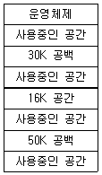
- First Fit Strategy
- Best Fit Strategy
- Worst Fit Strategy
- Big Fit Strategy
(정답률: 78%)
48. 다음 C 언어 코드의 결과 값은?
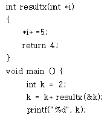
- 6
- 7
- 11
- 15
(정답률: 57%)
49. 주어진 BNF를 이용하여 고급언어로 작성된 프로그램을 구문분석하여 문장을 문법구조에 따라 트리 형태로 작성한 것은?
- Parse Tree
- Menu Tree
- Guide Tree
- Dump Tree
(정답률: 81%)
50. C 언어의 FOR 문, COBOL 언어의 PERFORM 문에 해당하는 것은?
- 반복문
- 종료문
- 입출력문
- 선언문
(정답률: 69%)
51. 프로그램 개발 과정에서 프로그램 안에 내재해 있는 논리적 오류를 발견하고 수정하는 작업을 무엇이라고 하는가?
- 링킹(Linking)
- 바인딩(Binding)
- 로딩(Loading)
- 디버깅(Debugging)
(정답률: 84%)
52. 현재 실행 중인 프로세스의 남은 시간과 큐에 새로 도착한 프로세스의 실행 시간을 비교하여, 가장 짧은 실행 시간을 요구하는 프로세스에게 CPU를 할당하는 스케줄링 기법은?
- FIFO
- HRN
- RR
- SRT
(정답률: 67%)
53. 최근의 사용 여부를 확인하기 위해서 각 페이지마다 2개의 비트, 즉 참조 비트와 변형 비트가 사용되는 페이지 교체 알고리즘은?
- STACK
- NUR
- FIFO
- OPT
(정답률: 59%)
54. 컴파일러 구조에서 원시 프로그램에 대한 문장 에러를 검사하는 단계는?
- 어휘 분석 단계
- 의미 분석 단계
- 중간코드 생성 단계
- 구문 분석 단계
(정답률: 59%)
55. 재배치 형태의 기계어로 된 여러 개의 프로그램을 묶어서 로드 모듈을 각성하는 것은?
- Cross Compiler
- Linkage Editor
- Operating System
- Preprocessor
(정답률: 61%)
56. 언어의 구문 요소 중 프로그램의 판독성을 향상시키고 프로그램 문서화의 주요 요소로서 프로그램 수행에는 영향을 주지 않는 것은?
- comment
- identifier
- key word
- reserved word
(정답률: 64%)
57. 객체지향 개념에서 이미 정의되어 있는 상위클래스(슈퍼 클래스 혹은 부모 클래스)의 메소드를 비롯한 모든 속성을 하위 클래스가 물려받는 것을 무엇이라 하는가?
- Abstraction
- Method
- Inheritance
- Message
(정답률: 74%)
58. BNF에서 사용되는 심볼 중 “정의”의 의미를 갖는 것은?
- ::=
- #
- ㅣ
- &
(정답률: 86%)
59. 단항 연산자 연산에 해당하는 것은?
- OR
- XOR
- NOT
- AND
(정답률: 79%)
60. BNT 표기법 중 “반복”을 의미하는 것은?
- < >
- ㅣ
- ::=
- { }
(정답률: 77%)
4과목: 정보통신 개론
61. X 25 프로토콜의 패킷계층에서 하나의 전송 링크를 통하여 여러개의 논리적 연결을 제공하는 기능은?
- 흐름제어
- 에러제어
- 다중화
- 리셋과 리스타트
(정답률: 73%)
62. 공중데이터 네트워크에서 패킷형 터미널을 위한 DTE와 DCE간의 접속규격을 나타내는 ITU-T 권고안은?
- V.23
- V.25
- Z.24
- X.25
(정답률: 81%)
63. 발광다이오드(LED)에서 나오는 빛의 파장을 이용해 광대역 통신망보다 빠른 통신 속도를 구현하는 기술은?
- LAN
- MCC
- Li-Fi
- SAA
(정답률: 79%)
64. 펄스코드 변조방식(PCM)의 송신측 변조과정은?
- 입력신호 → 부호화 → 양자화 → 표본화
- 입력신호 → 양자화 → 표본화 → 부호화
- 입력신호 → 표본화 → 양자화 → 부호화
- 입력신호 → 부호화 → 표본화 → 양자화
(정답률: 78%)
65. 패킷 교환 방식에 대한 설명으로 틀린 것은?
- 대화형 데이터 통신에 적합하도록 개발된 교환 방식이다.
- 패킷 교환은 저장-전달 방식을 사용한다.
- 데이터 그램과 가상 회선 방식으로 구분된다.
- 데이터 그램 방식은 패킷이 전송되기 전에 가상회선 연결 설정이 이루어져야 한다.
(정답률: 55%)
66. 광섬유 케이블은 빛의 어떤 현상을 이용하는 것인가?
- 산란
- 직진
- 전반사
- 굴절
(정답률: 79%)
67. 수신측에 두 개 이상의 안테나를 설치했을 때 이들 안테나에서 동시에 다중경로 페이딩이 발생하지 않는다는 원리를 이용해 페이딩을 방지하는 다이버시티 기술은?
- 공간 다이버시티
- 시간 다이버시티
- 지연 다이버시티
- 측파 다이버시티
(정답률: 64%)
68. 64진 QAM의 대역폭 효율은 몇 bps/Hz인가?
- 2
- 5
- 6
- 7
(정답률: 68%)
69. 샤논의 채널 용량 공식을 사용해서 주어진 채널의 데이터 전송율을 계산할 때, C=B이면 무엇을 의미하는가? (단, C : 통신용량, B : 대역폭)
- 신호가 잡음보다 약하다.
- 신호가 잡음보다 강하다.
- 신호의 잡음이 같다.
- 이 채널로는 데이터 전송이 불가능하다.
(정답률: 74%)
70. OSI참조모델의 응용계층에 해당하는 프로토콜이 아닌 것은?
- HTTP
- SMTP
- FTP
- ICMP
(정답률: 53%)
71. 8진 PSK의 오류 확률은 2진 PSK 오류 확률의 몇 배인가?
- 3
- 6
- 9
- 12
(정답률: 70%)
72. HDLC 전송제어에서 사용하는 동작 모드가 아닌 것은?
- 정규응답모드(NRM)
- 초기모드(IM)
- 비동기 평형모드(ABM)
- 비동기 응답모드(ARM)
(정답률: 65%)
73. PSK에서 반송파간의 위상차는? (단, M은 진수이다)
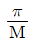
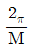
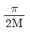
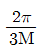
(정답률: 65%)
74. 다중화 기법 중 FDM방식에서 신호들이 전기적 중복 현상을 예방하기 위해서 인접하는 sub-channel들 사이에 위치하는 것은?
- Terminal
- Frequency band
- Guard band
- Polling
(정답률: 65%)
75. 대역폭이 4kHz인 음성신호를 PCM 형태의 디지털신호로 변환하여 전송할 경우 신호의 전송속도(kbps)는? (단, 양자화 레벨은 8비트)
- 4
- 8
- 32
- 64
(정답률: 42%)
76. OSI-7 계층의 네트워크계층에서 사용하는 기본 데이터 단위는?
- 세그먼트
- 패킷
- 워드
- 레코드
(정답률: 73%)
77. 에러가 발생되지 않는 이상적인 통신로(무잡음 이산 채널)의 채널 용량은? (단, C : 채널용량, n개의 기호들은 동일 확률을 가지고 있다.)
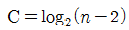
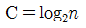
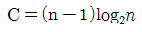
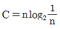
(정답률: 54%)
78. 수신단에서 패리티 체크(parity check)를 하는 주된 목적은?
- 기억 장치의 용량 검사
- 전송된 부호의 오류 검사
- 전송된 데이터의 용량 검사
- 검출된 오류를 정정
(정답률: 73%)
79. HDLC 전송프레임에서 시작 플래그 다음으로 전송되는 필드는?
- 제어부
- 주소부
- 정보부
- FCS
(정답률: 72%)
80. 이동통신망에서 통화 중인 이동국이 현재의 셀에서 벗어나 다른 셀로 진입하는 경우, 셀이 바뀌어도 중단 없이 통화를 계속할 수 있게 해주는 것은?
- 핸드오프(hand off)
- 다이버시티(diversity)
- 셀 분할(cell splitting)
- 로밍(roaming)
(정답률: 72%)